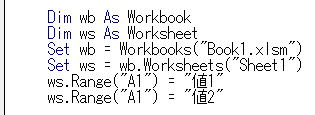

第17回.セルにブック・シートを指定する（Workbooks,Worksheets,With,Set）
ExcelマクロVBAで自動化する時に、シートが1つという事はむしろ稀でしょう。
多くの場合は複数のブック、複数のシートを扱う事になります。
そうなると、
どのブックのどのシートなのか、
どのシートのどのセルなのか、
これらを指定する必要が出てきます。
RangeやCellsだけを書いた場合には、アクティブブックのアクティブシートのセルになります。
つまり、手前に見えているブックの選択されているシートのセルという事です。
・ブックの指定
・シートの指定
これらを明確に指定します。
これらの書き方を順に解説します。
ブックの書き方
空白文字・全角半角文字等も含めて正確に指定します。
大文字小文字は区別されませんが、実際の文字に合わせて指定するようにします。
Workbooks("Book1.xlsm")
このように書きます。
ブックを開いた順番になります。
Workbooks(2)
このように書きます。
主に全ブックに対する処理を書くときに使います、それ以外ではあまり使いません。
見た目で、一番手前のブックになります。
特にブック指定しなければActiveWorkbookになります。
つまり、マクロを書いているブックです。
シートの書き方
その複数のシートから特定のシートを指定するVBAの書き方です。
大文字小文字は区別されませんが、実際の文字に合わせて指定するようにします。
Worksheets("Sheet1")
このように書きます。
ブックの左からの順番で、一番左のシートが1、次が2となります。
Worksheets(2)
このように書きます。
主に全シートに対する処理を書くときに使います、それ以外ではあまり使いません。
特にシート指定しなければActiveSheetになります。
セルにブック・シートを指定する方法
・Withを使う
・Setを使う
直接指定
Worksheets("Sheet1").Range("A1") = "値"
上記どちらでも同じになります。
ActiveSheet.Range("A1") = "値"
Range("A1") = "値"
上記いずれでも同じになります。
Withを使う
Withを使う事で一括指定できるようになります。
'ここに書くセルは、.(ドット)から書き始める事で、
'その前にWithの後に書いたブックやシートを省略することができます。
End With
それぞれ、実際に書いてみましょう。
Withの行を書いたら、Enter2回で先にEnd Withを書き、Tabでインデントを付けてから内部を書くようにして下さい。
Setを使う
マクロVBAでは複数のブック、複数のシートを扱う事が多いので、
Withで指定するブック・シート以外の指定が面倒になります。
Setを使う事で短い名称で簡単に指定できるようになります。
Set 変数 = ブックやシート
データ型(WorkbookやWorksheet)は省略可能です。
Dim 変数
これだけでも動作に問題はありません。
データ型はVariantになり、何でも入れられます。

Workbooks("Book1.xlsm").Worksheets("Sheet1")に短縮名称（別名）のwsを付けたと考えて下さい。
Setで変数に入れることで、そのブックやシートを変数で指定できるという事です。
Setで変数に入れた後は、
Workbooks("Book1.xlsm")をwbに、
Workbooks("Book1.xlsm").Worksheets("Sheet1")をwsに書き換えられるようになるという事です。
SetとWithを組み合わせて使う
悩まないように、以下のように使いましょう。
・一番よく使うシートをWithで指定
どうしようかと悩むくらいなら全部Setで変数に入れてしまいましょう。
もちろん、ブックが1つならブックの指定を省略して構いません。
ExcelマクロVBA入門の対応ページ
第37回.ブック・シートの指定
第51回.Withステートメント
第52回.オブジェクト変数とSetステートメント
同じテーマ「マクロVBA再入門」の記事
第14回.セルの書式を設定する（NumberFormatLocal,Font,Barders,Interior）
第15回.手作業で出来なければマクロは書けない
第16回.エクセルの機能を上手に使う
第17回.セルにブック・シートを指定する（Workbooks,Worksheets,With,Set）
第18回.シートをコピー・挿入・削除する（Worksheets,Copy,Add,Delete）
第19回.ブックを開く・閉じる・保存する（Workbooks,Open,Close,Save,SaveAs）
第20回.全てのシートに同じ事をする（For～Worksheets.Count）
第21回.ファイル一覧を取得する（Do～LoopとDir関数）
第22回.複数ブックよりデータを集める
第23回.複数のプロシージャーを連続で動かす（Callステートメント）
第24回.マクロの呪文を追加してボタンに登録（ScreenUpdating）
新着記事NEW ・・・新着記事一覧を見る
VBA100本ノック 100本目：WEBから100本ノックのリストを取得｜VBA練習問題（3月3日）
VBA100本ノック 99本目：自動席替え（行列と前後左右が全て違うように）｜VBA練習問題（3月2日）
VBA100本ノック 98本目：席替えルールが守られているか確認｜VBA練習問題（3月1日）
VBA100本ノック 97本目：Accessデータを取得（グループ集計）｜VBA練習問題（2月27日）
VBA100本ノック 96本目：Accessデータを取得（マスタ結合&抽出）｜VBA練習問題（2月26日）
VBA100本ノック 95本目：図形のテキストを検索するフォーム作成｜VBA練習問題（2月24日）
VBA100本ノック 94本目：表範囲からHTMLのtableタグを作成｜VBA練習問題（2月23日）
VBA100本ノック 93本目：複数ブックを連結して再分割｜VBA練習問題（2月22日）
VBA100本ノック 92本目：セルの色を16進で返す関数｜VBA練習問題（2月20日）
VBA100本ノック 91本目：時間計算（残業時間の月間合計）｜VBA練習問題（2月19日）
アクセスランキング ・・・ ランキング一覧を見る
1.最終行の取得（End,Rows.Count）｜VBA入門
2.RangeとCellsの使い方｜VBA入門
3.変数宣言のDimとデータ型｜VBA入門
4.マクロって何？VBAって何？｜VBA入門
5.Range以外の指定方法（Cells,Rows,Columns）｜VBA入門
6.セルのコピー&値の貼り付け（PasteSpecial）｜VBA入門
7.繰り返し処理（For Next)｜VBA入門
8.セルに文字を入れるとは（Range,Value）｜VBA入門
9.マクロはどこに書くの（VBEの起動）｜VBA入門
10.とにかく書いてみよう（Sub,End Sub）｜VBA入門
このサイトがお役に立ちましたら「シェア」「Bookmark」をお願いいたします。
記述には細心の注意をしたつもりですが、
間違いやご指摘がありましたら、「お問い合わせ」からお知らせいただけると幸いです。
掲載のVBAコードは動作を保証するものではなく、あくまでVBA学習のサンプルとして掲載しています。
掲載のVBAコードは自己責任でご使用ください。万一データ破損等の損害が発生しても責任は負いません。